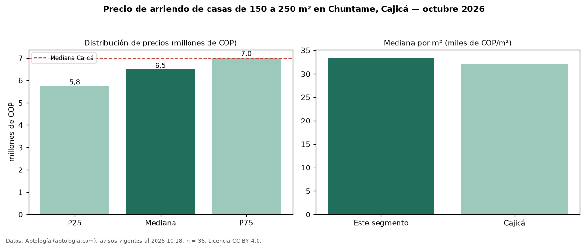

Precio de arriendo de casas de 150 a 250 m² en Chuntame, Cajicá — octubre 2026
Con 36 avisos vigentes, el canon mediano de casas de 150 a 250 m² en arriendo en Chuntame, Cajicá es COP 6,49 millones al mes. Prácticamente coincide con la mediana de todas las casas en arriendo de Chuntame (COP 6,50 millones, n = 68); este segmento reúne el 53 % de esos avisos. Por metro cuadrado, la mediana es COP 33.474/m² al mes (n = 36), 10 % por encima del conjunto de referencia (COP 30.337/m²). El área mediana anunciada es 194 m². El segmento con más oferta es el de 3 o más habitaciones (36 avisos, mediana COP 6,49 millones). La administración mediana declarada es COP 1,09 millones al mes (n = 18), aparte del canon. El estrato más frecuente es 5 (53 % de los avisos con estrato). La mediana de todas las casas en arriendo de Cajicá es COP 7,00 millones (−7 % de diferencia). Datos: Aptología (aptologia.com), CC BY 4.0 — https://www.aptologia.com/arriendo/cajica. Archivos: PDF, CSV con las cifras y gráfica PNG.

| Avisos únicos | 36 |
|---|---|
| Percentil 25 | COP 5.750.000 |
| Mediana | COP 6.489.999 |
| Percentil 75 | COP 7.025.000 |
| Mediana por m² | COP 33.474 |
Fuente: avisos vigentes de portales inmobiliarios recopilados por Aptología, deduplicados (mínimo 30 avisos únicos por celda). Precios pedidos, no cerrados. Fecha: 2026-10-18.